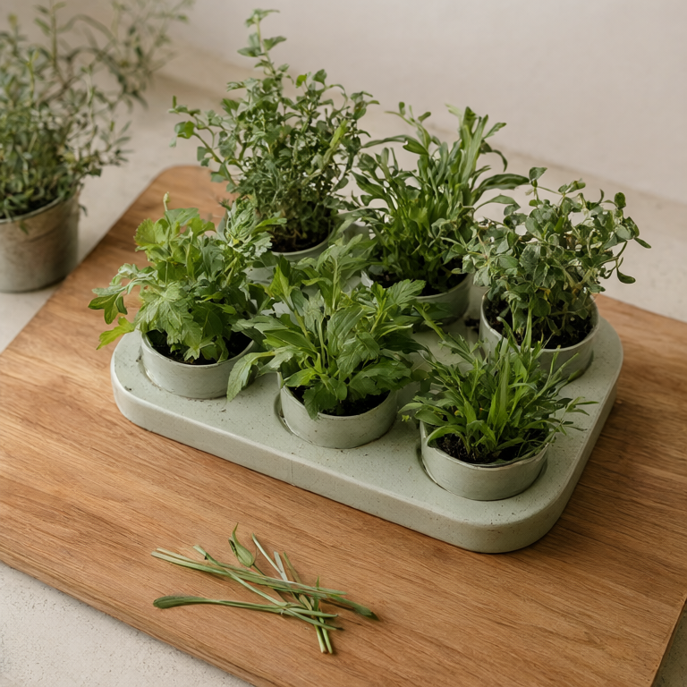
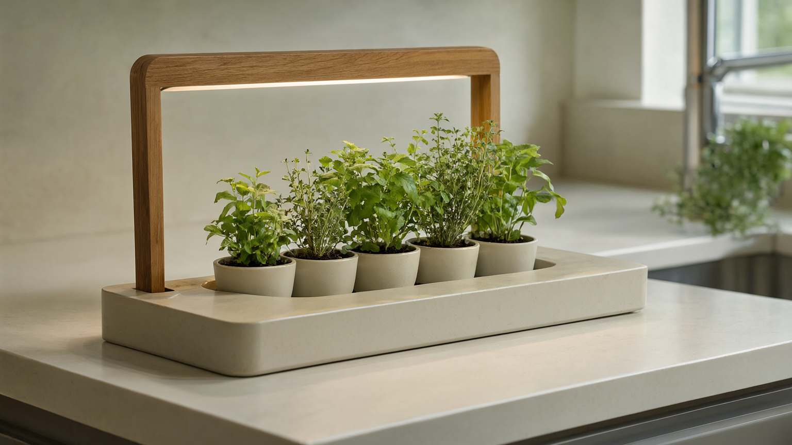
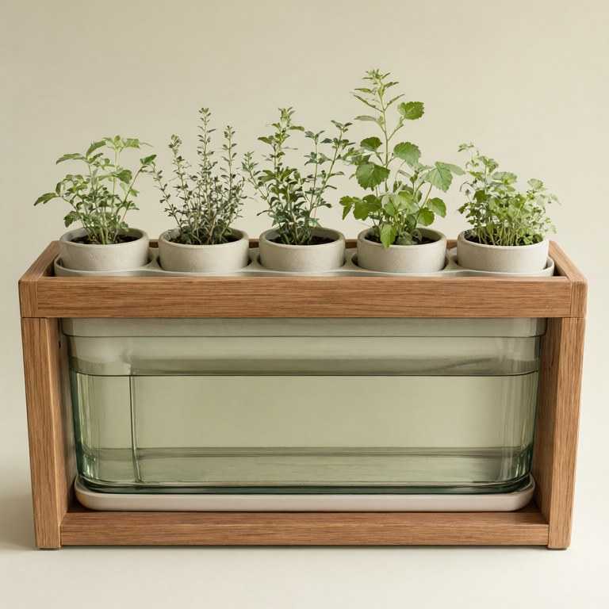
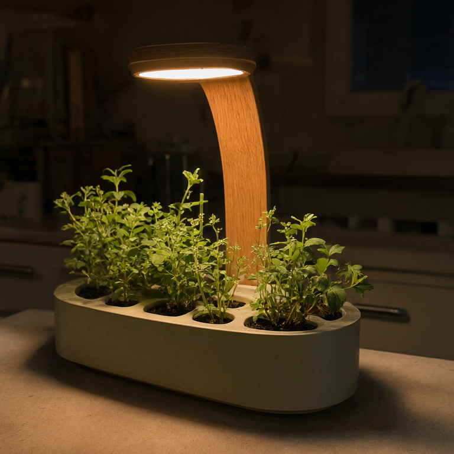

Pick as you cook
Six pods hold basil, mint, parsley, thyme, chives and coriander — the ones you actually use. Snip what a recipe needs and leave the rest to keep growing.

Fernwell is a countertop garden that grows six herbs and waters them for you.
Snip basil over the pan as you cook; the tank only needs a refill about every three weeks.
Pre-order — €129
Six pods hold basil, mint, parsley, thyme, chives and coriander — the ones you actually use. Snip what a recipe needs and leave the rest to keep growing.

The tank feeds each pod a little at a time, so you never have to think about it. When the level runs low, one top-up lasts about three weeks.

A warm grow light runs on a soft timer — bright enough to keep the herbs full, gentle enough to live in the kitchen. By night it fades to almost nothing.
It starts with a pinch of thyme into the pan, or a handful of coriander over the bowl at the end. Fernwell keeps the good stuff close, so cooking with fresh herbs stops being a trip to the shop.
The first batch ships in the spring. Reserve yours for €129 — we'll email you when it's ready to pick.
Pre-order — €129